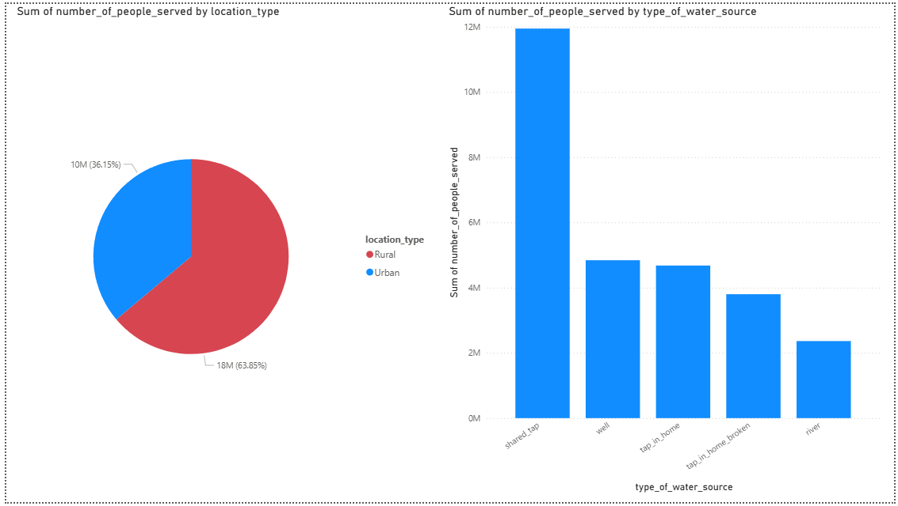
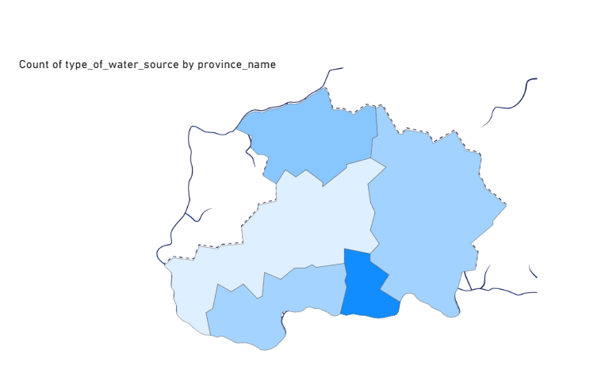
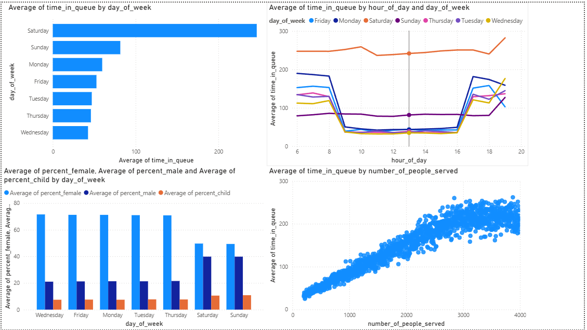
Maji Ndogo – Part 1: Exploring Access
Survey-led overview of rural vs. urban water access, gender roles, and reliance on taps and wells. (3 dashboard views)
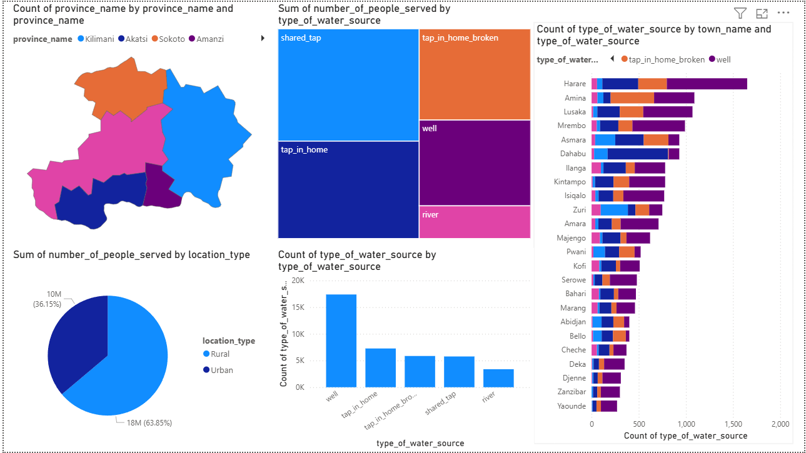
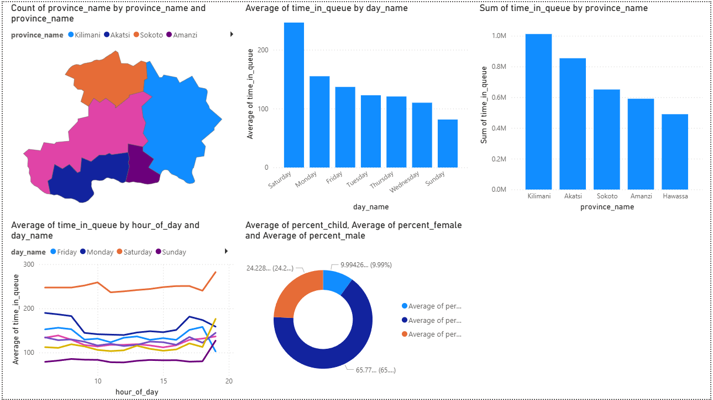
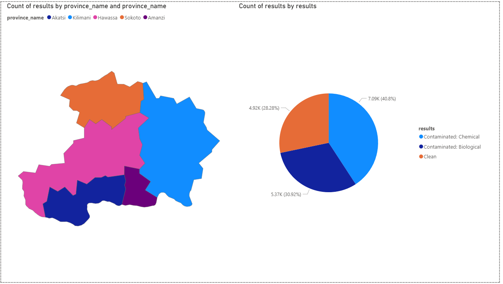
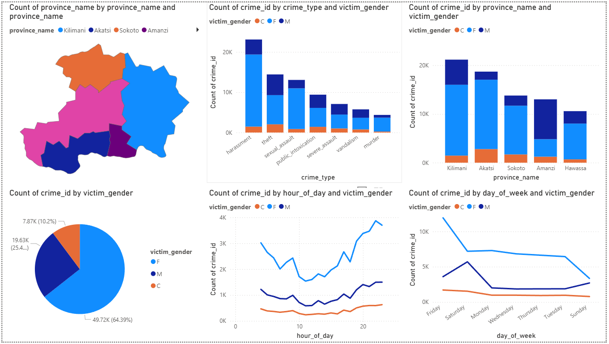
Maji Ndogo – Part 2: Insights for Leaders
Reports for leaders & governors: who lacks access, upgrade costs, and priority regions. (4 dashboard views)
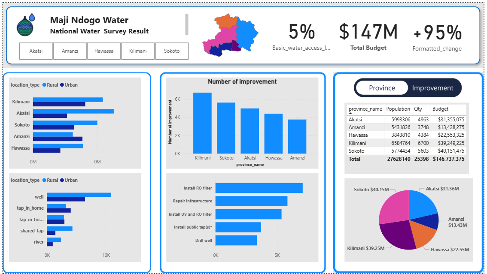
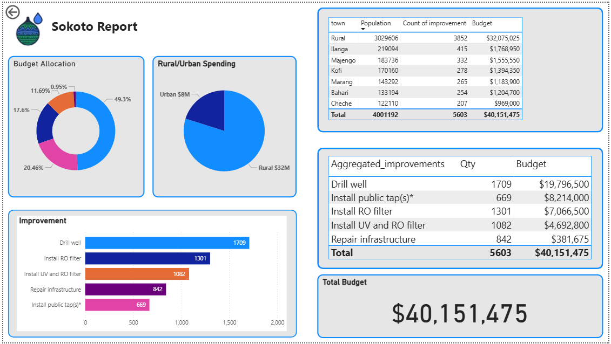
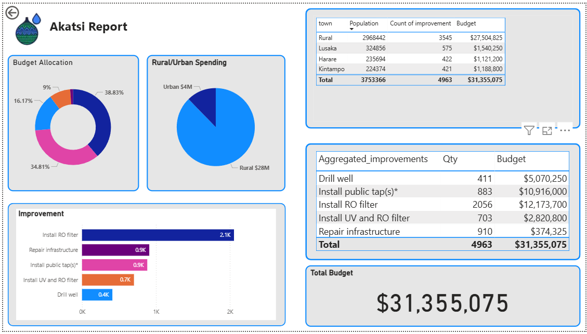
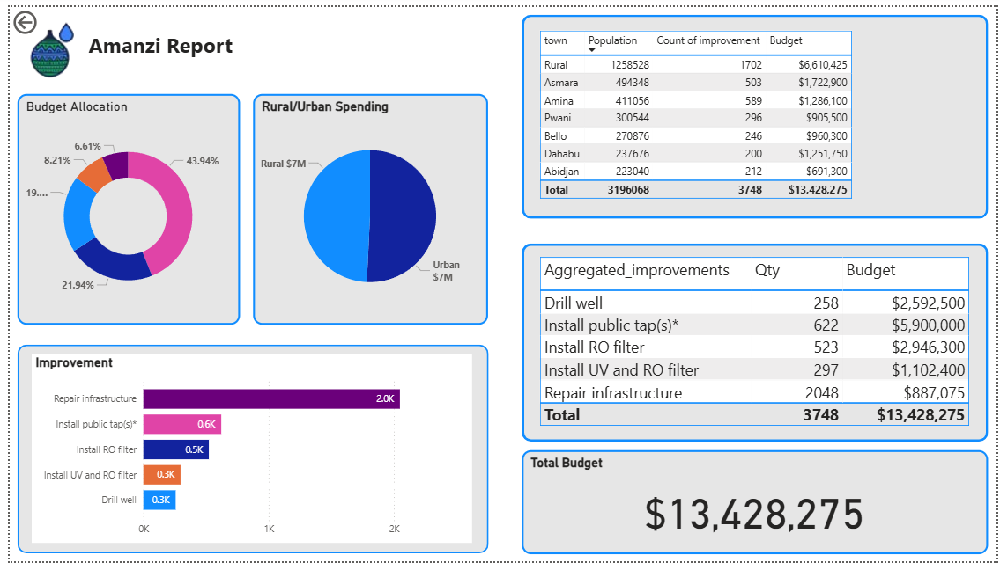
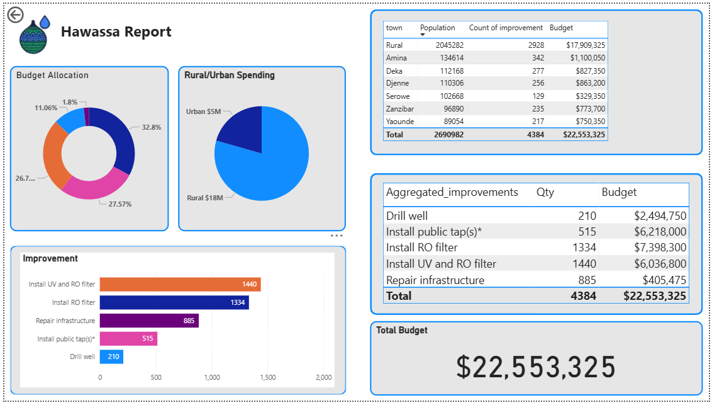
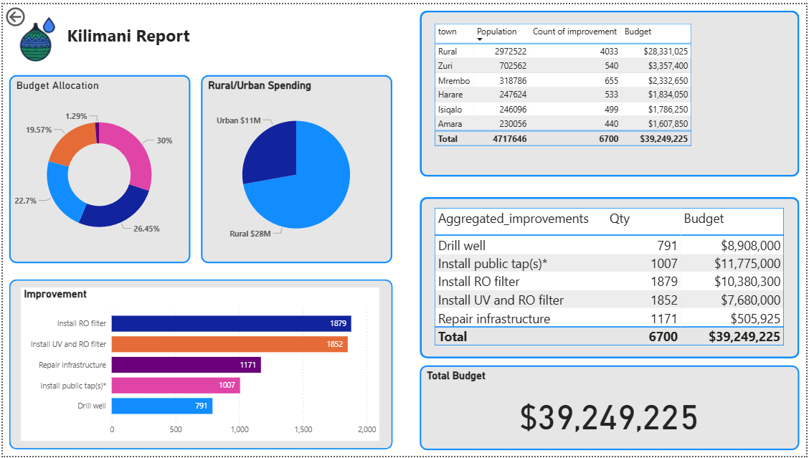
Maji Ndogo – Part 3: Progress & Budget
KPIs for population water access, project completion, and budget allocations across provinces. (6 dashboard views)
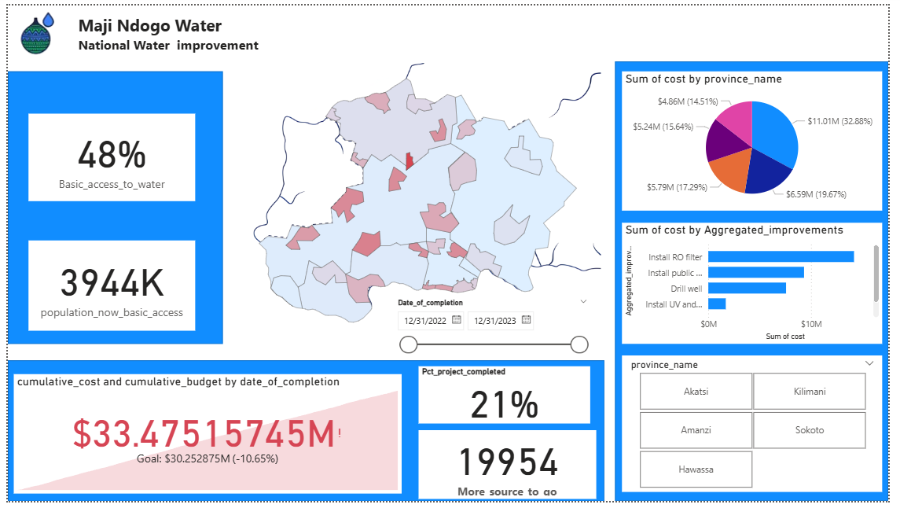
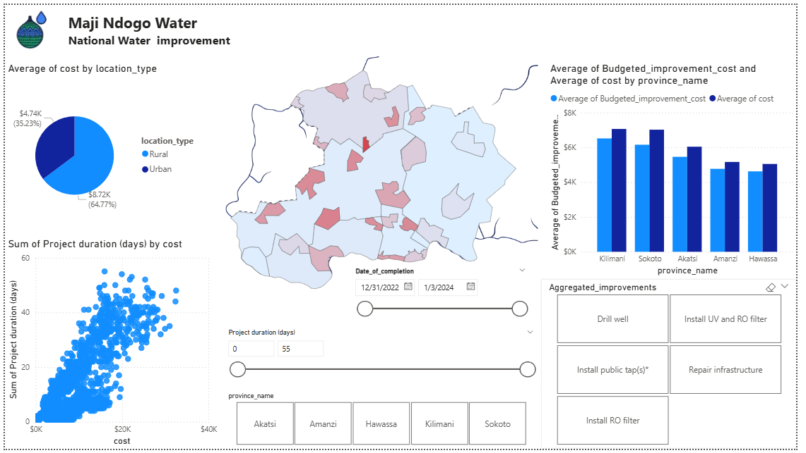
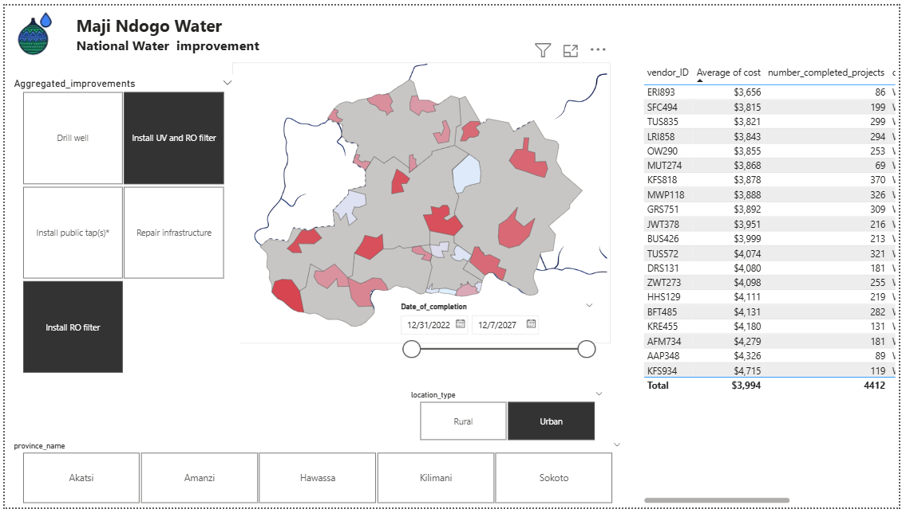
Maji Ndogo – Part 4: Accountability
Finalized reporting with interactive toggles, provincial drill-throughs, and impact-driven metrics. (7 dashboard views)